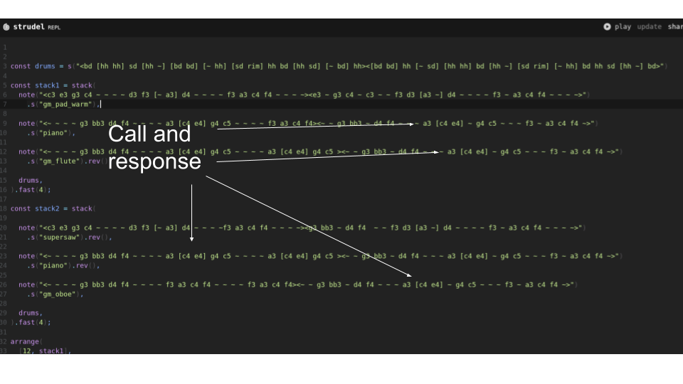

sequenceDiagram
participant User
participant LLM
User->>LLM: Prompt: What is the capital of France?
LLM->>User: Response: The capital of France is Paris.
Large Language Models and Applications
Calvin Williamson, Science and Math
2026-01-26
Large Language Models (LLM)
- AI Models You Send a Prompt and They Give a Response
- ChatGPT, Claude, Gemini, DeepSeek, Many Others
- Prompts can include Text, Images, Audio, Video
- Responses can include Text, Images, Audio, Video
Text Based LLMs
To prompt an LLM with text you type your question and submit it
The model responds with some text.
Example: ChatGPT 3.5 (Nov 22)
MultiModal LLMs
Prompts can include
- Text
- Image (eg. uploaded image file)
- Audio (eg. from microphone, or uploaded audio file)
- Video (eg Webcam)
- Screen sharing (eg show your computer screen)
Responses can include: Text, Image, Audio, Video
Example: Gemini 2.0 Flash (Dec 24)
How To Prompt a MultiModal LLM using Audio
To prompt the LLM you speak into a microphone on your computer
sequenceDiagram
participant User
participant LLM
User->>LLM: Audio Prompt 🔊: Can you hear me?
LLM->>User: Audio Response 🔊: Yes! I hear you? How can I help you today?
The model responds in audio and/or text that you can hear and see immediately
How To Prompt a MultiModal LLM using Video and Audio
Using a webcam you speak and show the model what you want
sequenceDiagram
participant User
participant LLM
User->>LLM: Webcam Prompt 📹+🔊: Can you see and hear me?
LLM->>User: Audio Response 🔊: Yes! I can both see and hear you. How can I help you today?
The model responds in audio and/or text
Large Language Model: Deep Seek
In Spring 25 a new model called Deep Seek caused Wall Street to panic and lose Billions of dollars. The reason is the Deep Seek was released as an open source model that anyone could download and run on their own, thus challenging the idea that only companies with proprietary models would dominate the AI space. The models from OpenAI, Anthropic, Google all are proprietary models:
- ChatGPT (OpenAI)
- Claude (Anthropic)
- Gemini (Google)
These models cannot be run by anyone the way Deep Seek can.
Examples of Reasoning Models: Deep Seek
Deep Seeks models are competive with the state of the art closed source models but are created at a fraction of the cost.
Notice the difference when posting prompts to the standard V3 models versus the “reasoning model” (Button “DeepThink”). The reasoning model shows you its thinking process.
Large Language Models as Software Developers
- Language models excel at writing software
- Vibe Coding: Prompting models to write code without reading source
- GPT 5.2 (OpenAI)
- Claude Sonnet 4.5 and Opus 4.5 (Anthropic)
- Gemini 3 Pro (Google)
- Qwen3-Coder
- Kimi K2
- Glm 4.7
Prompting Large Language Models
Some examples of prompting and their costs using openrouter:
LLMs and Tools
LLMs can call Tools (external programs)
This ability is sometimes called agentic.
Examples (Tools):
- Websearch
- Calculator
- Wikipedia access
- Financial Data APIs (Yahoo Finance)
A Music Composition Language
Strudel.cc is a musical language for live coding and DJing It is based on a language called Tidal Cycles which is written in a programming language called Haskell. It is compact, technical, and mathematical language.
It is amazing in capability.
Learning Strudel
Large Language Models Working With Strudel
Examples:
Large Language Models Working With DAWs
Examples:
LLMs and Music Composition
You can use an LLM to teach you about programming. This is what they are good at. So you will be able to use an LLM to understand and write Strudel!
This is amazing because Strudel can be difficult.
Examples of what the LLM knows
Call and Response
Examples of what the LLM knows

Chords And Melodies